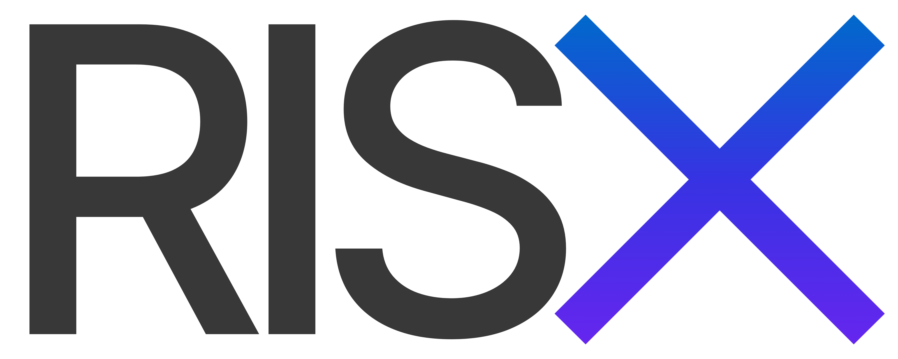

Building intelligence for a safer digital world.
KNCOK is building technology and intelligence around fraud, financial crime, risk and digital threats — making complex information easier to understand, connect and act upon.
Information is everywhere. Understanding it is not.
Digital fraud and financial crime leave behind fragments of information — reports, numbers, domains, messages, identities, transactions, behaviours and patterns.
KNCOK exists to turn those fragments into useful intelligence.
We believe better intelligence can help people recognise risk earlier, understand what happened and make better decisions.
Intelligence should be useful, understandable and responsible.
Evidence over speculation.
Information should be grounded in evidence, traceable to its source and presented with appropriate context.
Context over sensationalism.
Risk information should help people understand a threat rather than simply create fear.
Accessibility over gatekeeping.
Useful intelligence should be accessible to people beyond specialist environments.
Technology in service of people.
Technology should make difficult information easier to discover, understand and use.

A public intelligence layer for digital fraud.
RISX is KNCOK's first product — a public-facing fraud intelligence platform designed to turn reported incidents and scattered information into structured, searchable and understandable intelligence.
KNCOK's long-term ambition is to build useful intelligence infrastructure around the risks emerging from an increasingly digital world.
Make intelligence accessible before it is urgently needed.
Fraud does not happen in isolation. The same tactics, infrastructure, identities and behaviours can appear across many incidents.
Yet the information needed to recognise those patterns is often fragmented across reports, platforms and individual experiences.
KNCOK is building toward a world where those fragments can be connected into intelligence that helps people see the bigger picture.
Start with fraud. Build toward intelligence.
RISX is the beginning — not the definition of everything KNCOK can become.
We are starting with one of the most visible forms of digital harm: fraud. The lessons, intelligence and infrastructure built here can form the foundation for a much broader understanding of digital risk.
Build carefully. Explain clearly. Think long-term.
Independent thinking.
Build with curiosity, skepticism and a willingness to question assumptions.
Responsible intelligence.
Intelligence should inform decisions, not manufacture certainty.
Long-term thinking.
Build infrastructure that becomes more useful as knowledge accumulates.
We're building for the long term.
KNCOK is an independent company building intelligence and technology around fraud, financial crime, risk and digital safety.